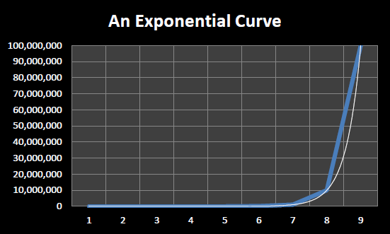

In 1965, Gordon Moore, the co-founder of Intel, wrote a paper entitled “Cramming more components onto integrated circuits”.[3] In this paper he attempted to predict the course of the microelectronics industry for the next ten years (through 1975). He noted that the number of components per integrated circuit had approximately doubled each year for the past five years and predicted that they would continue to do so for the next 10 years. In 1975, Moore noted that 9 doublings had taken place instead of the 10 he predicted and he modified his prediction of future progress to state that component densities would double every two years for the foreseeable future. According to Moore, a colleague, David House, noted that in addition to the number of transistors per integrated circuit doubling every two years the speed of those transistors was also improving – leading House to postulate that overall computing performance would double approximately every 18 months.[4]
Thus was born Moore’s Law – the observation that computer performance for a fixed dollar cost roughly doubles every 18 months. Moore’s Law is an observation about past progress in microelectronics – a “law” that has held true for over half a century. Computer engineers and chip designers use Moore’s Law to extrapolate future increases in computer performance and to set research goals. In fact, it can be argued that this expectation of performance doubling every year and a half has, in a sense, become a self fulfilling prophesy – we expect computer performance to double every 18 months, so we work hard to ensure that such increases continue.
Moore’s Law describes an exponentially increasing function. When an exponential function is graphed using a linear scale, as in , it takes on the appearance of a hockey stick.
When one ‘steps back’ and looks at an exponential graphed over time it appears that for a long time very little progress occurs followed by an ‘explosion’ of progress at the end. However, this is an optical illusion of sorts, since a true exponential always has the characteristic hockey stick shape no matter which part of the curve you examine. Thus if you ‘zoom in’ on the ‘relatively flat’ section at the beginning of the graph you might be surprised to see the same characteristic hockey stick shape, just at a different scale.

An exponential curve plotted using a linear scale
An exponential curve plotted using a logarithmic scale
In order to be able to see increases (or decreases) in the rate of progress more clearly, exponential processes are often graphed using a logarithmic scale. Instead of the vertical axis increasing in fixed sized steps, such as steps of 10,000,000 units in , each vertical tick mark is X times the previous tick mark, where X is generally a small constant such as 2 or 10.
plots the same curve as that in except that a logarithmic scale is used. Each horizontal line in represents ten times the previous horizontal line. Note that exponential functions appear as straight lines when plotted on a logarithmic scale.
displays the historical performance of Moore’s Law from 1971 through 2011, graphed on a logarithmic scale with each vertical tick mark being 10 times the previous tick mark. The individual dots, or points, represent CPU’s. Their location on the graph reflects their date of introduction (position along horizontal axis) and number of transistors (position along the vertical axis). The straight line represents a true exponential function that doubles every two years.[5]

Forty years of Moore’s Law – 1971 to 2011
As can be seen from , transistor counts roughly doubled every two years from 1971 to 2011 in accordance with Moore’s Law. Over this forty year period 20 doublings took place which translates to a one million fold increase in integrated circuit complexity.
Though Moore’s Law specifically focuses on the rate of increase in the number of transistors in integrated circuits, this general trend of exponential growth has been observed in many other aspects of computing and information technology. Examples include: the exponentially decreasing cost per byte stored on hard drives, exponentially increasing network capacity and exponentially decreasing cost per byte transmitted, and exponentially decreasing cost of DNA sequencing. This more general observation concerning the exponential growth of computing and information technologies is sometimes called “Kurzweil’s Law of Accelerating Returns” after Raymond “Ray” Kurzweil, the futurist who is the highest profile proponent of the school of thought that information and communication technologies are improving exponentially.
Footnotes
[3] Electronics, Volume 38, Number 8, April 19, 1965. An archived copy is available online at http://download.intel.com/museum/Moores_Law/Articles-Press_Releases/Gordon_Moore_1965_Article.pdf
[4] “Excerpts from a conversation with Gordon Moore: Moore’s Law”, Intel, 2005. An archived copy is available online at ftp://download.intel.com/museum/Moores_Law/Video-Transcripts/Excepts_A_Conversation_with_Gordon_Moore.pdf
[5] This figure comes from the Wikipedia article on Moore’s Law. http://en.wikipedia.org/wiki/Moore's_law